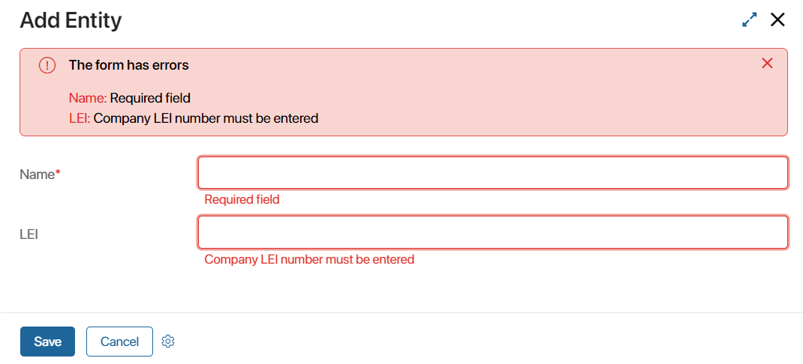
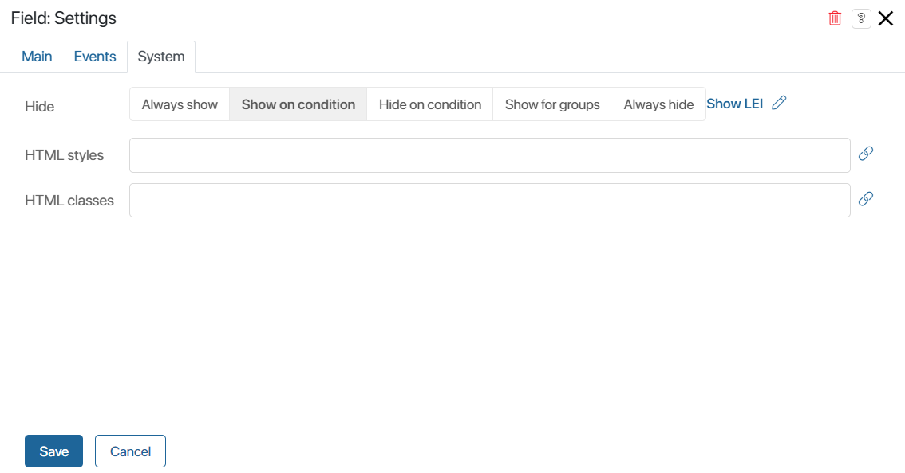

Валидация используется для проверки правильности заполнения полей и определения возможности сохранения формы. Валидация может быть:
- системной — проверяется заполнение обязательных полей на форме. В рамках системной валидации на форме отображаются только типовые ошибки;
- пользовательской — параметры проверки полей и вывода ошибок задаются пользователями.
Для создания пользовательской валидации применяется функция Валидация, которая создаётся на вкладке Настройки дизайнера интерфейсов. В этой функции прописываются дополнительные проверки к уже существующим стандартным проверкам валидации. Подробнее о методах и свойствах объекта результата валидации читайте в справке ELMA365 TS SDK в статье «Результат валидации».
Если присутствует хотя бы одна ошибка стандартной или пользовательской валидации, форму сохранить невозможно. Исключением являются ошибки скрытых на форме полей.
Добавление пользовательской валидации
Рассмотрим работу функции валидации на примере проверки поля ИНН при создании элемента приложения Компании.
Допустим, на форме приложения Компании расположено свойство ИНН типа Строка. Для создания новой компании необходимо, чтобы это поле было правильно заполнено, то есть введено определённое количество цифр.
Для создания пользовательской валидации выполните следующие действия:
- Откройте форму создания элемента приложения в дизайнере интерфейсов.
- Перейдите на вкладку Настройки.
- В разделе Системные функции в поле Валидация укажите функцию проверки полей. Для этого нажмите Создать, а затем Открыть.
- На открывшейся вкладке Скрипты будет отображаться заготовка в виде пустой асинхронной функции, которая возвращает результат валидации
(Promise.) - Внутри функции создайте новый объект результата валидации и поместите его в переменную, например,
result. В этот объект можно добавлять необходимые ошибки валидации. Также объект необходимо возвращать в результате выполнения функции:
async function validate(): Promise<ValidationResult> {
const result = new ValidationResult();
...
return result;
}
После создания функции и добавления в неё переменной с результатом сформируйте ошибки валидации. Они выводятся на форму при неверном заполнении полей.
Добавление ошибок валидации
В функцию валидации можно добавлять различные действия, например, дополнительные проверки, а также создавать ошибки, которые будут выводиться на форму.
Например, в функции будет проверяться не только заполнение свойства ИНН, но и его содержимое: количество введённых символов и их тип.
Для удобства при создании проверок валидации создадим переменную inn, в которую из контекста будет передаваться значение свойства, хранящее введённый ИНН (Context.data.inn):
async function validate(): Promise<ValidationResult> {
const result = new ValidationResult();
const inn = Context.data.inn;
…
return result;
}
При проверке содержимого свойства будем добавлять в переменную результат валидации. При этом в качестве первого параметра для результата будем использовать код поля из контекста (в нашем случае, inn), а второго — отображаемый текст ошибки валидации. Например:
async function validate(): Promise<ValidationResult> {
const result = new ValidationResult();
const inn = Context.data.inn;
if (!inn?.length) {
result.addContextError('inn', "Необходимо ввести ИНН компании");
return result;
}
if (inn && /[^0-9]/.test(inn)) {
result.addContextError('inn', "ИНН может состоять только из цифр");
return result;
}
if (inn && [10, 12].indexOf(inn.length) === -1) {
result.addContextError('inn', "ИНН может состоять только из 10 или 12 цифр");
return result;
}
return result;
}
Для добавления ошибок валидации можно использовать следующие методы:
addContextError— если проверяемое свойство находится в контексте основного объекта (свойство приложения, задачи и т. д), то есть вContext.data;addViewContextError— если свойство находится в контексте самой формы, то есть вViewContext.data.
Данные правила необходимо учитывать при написании функций, иначе ошибки на форме могут отображаться некорректно.
После проверки полей и добавления ошибок для определённых условий сохраните и опубликуйте форму. При попытке создать элемент приложения Компания без заполнения обязательных полей вы увидите ошибки:

Ошибки валидации выводятся под полями, а также перечислены в блоке валидации в верхней части формы. Помимо добавленных пользовательских ошибок валидации в списке также показаны ошибки стандартной валидации — в нашем случае незаполненное обязательное поле Название.
При корректном выборе метода добавления ошибки в списке будут отображаться имена свойств. При нажатии на название свойства из списка будет осуществлён переход к данному полю на форме.
Также в правом верхнем углу блока валидации отображается значок  , который позволяет закрыть блок. При попытке сохранить форму и наличии хотя бы одной ошибки блок будет показан снова.
, который позволяет закрыть блок. При попытке сохранить форму и наличии хотя бы одной ошибки блок будет показан снова.
Для каждого поля можно добавлять несколько ошибок валидации одновременно. Например, можно изменить функцию валидации так, чтобы при каждой проверке свойства не возвращать результат, а проверять следующее условие. Например:
async function validate(): Promise<ValidationResult> {
const result = new ValidationResult();
const inn = Context.data.inn;
if (!inn?.length) {
result.addContextError('inn', "Необходимо ввести ИНН компании");
}
if (inn && /[^0-9]/.test(inn)) {
result.addContextError('inn', "ИНН может состоять только из цифр");
}
if (inn && [10, 12].indexOf(inn.length) === -1) {
result.addContextError('inn', "ИНН может состоять только из 10 или 12 цифр");
}
return result;
}
В таком случае в блоке валидации формы и под самим полем будут отображены все актуальные ошибки валидации для данного свойства:

Изменение заголовка блока валидации
Над списком ошибок в блоке валидации находится заголовок, значение для которого задано по умолчанию. Чтобы изменить заголовок, воспользуйтесь свойством title:
result.title = "При создании компании обнаружены ошибки:";
Добавление текста в ошибки валидации
В блоке со списком ошибок валидации можно выводить текстовые сообщения с дополнительной информацией. Например, добавить сообщение о какой-либо ошибке через метод addMessage:
result.addMessage('Эта ошибка не привязана ни к какому полю формы, но является ошибкой');
Добавленные таким образом сообщения будут отображаться под заголовком блока валидации:
Валидация скрытых полей
На форме приложения может присутствовать скрытое, но обязательное для заполнения поле. В этом случае валидация будет зависеть от того, как именно скрыто поле:
- валидация игнорируется, если поле не отображается на форме по какому-либо условию. Например, видимость поля зависит от значения других свойств, оно управляется функцией или добавлено в скрытый по условию виджет. В этом случае скрытое поле не будет валидировано, и пользователь не увидит ошибок при сохранении элемента;
- валидация сработает, если поле всегда скрыто или добавлено в виджет, который скрыт всегда. Например, значение для поля устанавливается автоматически с помощью скрипта. В этом случае скрытое поле будет проверяться на ошибки заполнения, и пользователь увидит их при сохранении элемента.
Рассмотрим подробнее оба варианта.
Валидация скрытых по условию полей
Предположим, на форме создания компании расположено обязательное для заполнения поле ИНН. Чтобы пользователи могли добавить новый элемент без ввода ИНН компании, настроим отображение поля с помощью переключателя:
- Откройте форму создания элемента приложения в дизайнере интерфейсов.
- Удалите расположенный по умолчанию виджет Стандартная форма элемента, который содержит все свойства из контекста приложения.
- Добавьте на форму удалённые вместе с виджетом свойства повторно. Для этого в правой панели дизайнера интерфейсов выберите вкладку Свойства и перетащите необходимые поля на форму. Все свойства будут отображаться в виде виджета Строка формы.
- Перейдите на вкладку Контекст и создайте свойство Показать ИНН (
show_inn) с типом Выбор «да/нет». - Вынесите созданное свойство Показать ИНН на поле для моделирования.

- Откройте настройки свойства ИНН. На вкладке Системные в поле Видимость выберите опцию Показать по условию. Затем укажите переменную Показать ИНН. Отображение поля для ввода ИНН будет зависеть от значения этой переменной.

- Сохраните и опубликуйте форму.
После этого попробуйте создать элемент приложения Компания. Установите переключатель Показать ИНН в значение Нет, чтобы скрыть обязательное для заполнения поле, и нажмите кнопку Сохранить.

Произойдёт проверка обязательного поля Название. После заполнения этого поля элемент будет сохранён, а ошибки валидации скрытого поля ИНН будут проигнорированы.
При установке переключателя в значение Да поле для ввода ИНН будет отображено на форме и его валидация будет проверяться.
Валидация всегда скрытых полей
Предположим, на форме создания компании нужно разместить скрытое поле, значение для которого устанавливается с помощью скрипта. Для корректной работы приложения значение этого поля проверяется правилами валидации. Для этого:
- Откройте форму создания элемента приложения в дизайнере интерфейсов.
- Перейдите на вкладку Контекст и создайте новое свойство. Задайте название, например, Специальное поле (
special). - Разместите созданное свойство на поле для моделирования. Для этого на правой панели дизайнера интерфейсов выберите вкладку Свойства и перетащите поле на форму. Свойство будет отображаться в виде виджета Строка формы.
- В открывшемся окне настроек свойства на вкладке Системные в поле Видимость выберите опцию Скрывать всегда.
- Сохраните и опубликуйте изменения.
После этого попробуйте создать элемент приложения Компания. Если скрытое поле не заполнено или заполнено неверно, пользователь увидит ошибку валидации.